LPT vs N-body Before Shell Crossing
Two studies on identical fixed-amplitude initial conditions. How well do Lagrangian perturbation theory at orders 1–4 and a converged particle-mesh N-body simulation agree on the density field, first in its one-point PDF, then in its spatial correlations once the PDF is removed?
Summary
2LPT is too narrow in both tails. Its voids are not empty enough (the 0.1% volume quantile of 1+δ is 8–11% too high at Rs ≤ Rf) and its peaks are not dense enough (the mass-weighted 99.9% quantile is 29% low at 7 Mpc/h and 9% low at 14 Mpc/h). The median agrees to ≤ 0.1%. These differences are 10–100× the numerical uncertainty of either method.
The LPT series converges to N-body. Each order removes a large part of the gap. Void quantiles converge with alternating sign, dense-tail quantiles monotonically from below. 4LPT agrees with N-body to ≲ 1% on every scale, except in the far tails at Rs ≤ Rf.
With the PDF removed, 2LPT has a small but converged two-point error. Its rank-Gaussianized Lagrangian correlation exceeds N-body's by about 5.7 × 10⁻³ near 20–30 Mpc/h at z = 0 (1.5–3% of ξy) and 2 × 10⁻³ at z = 1. 4LPT removes 75–95% of it.
Element by element, LPT and N-body ranks are one monotone relation. 1 − Spearman ≤ 3 × 10⁻⁴ at N = 256, with no detectable non-monotone part. The residual is mostly N-body discreteness; only 2LPT at z = 0, R ≥ 7 Mpc/h, shows a stable LPT rank error (≈ 1.3 × 10⁻⁴).
N-body's extra Eulerian clustering at ~10 Mpc/h is a one-point effect. Giving LPT the N-body marginal accounts for 108–163% of Δξδ (volume-weighted, converged); the copula part pulls the other way and originates in the Lagrangian copula, not the displacement mapping. Both orderings agree to ≤ 0.12.
Common setup
| Cosmology | Planck18 (EE+BAO+SN); Eisenstein–Hu 1998 transfer with baryons, σ₈ = 0.8105 |
| Box | L = 300 Mpc/h, periodic |
| IC filter | real-space top hat on δlin, Rf = 14 Mpc/h (Mf = 9.8 × 10¹⁴ M☉/h, σlin = 0.535 at z = 0) |
| Amplitudes | fixed (Angulo & Pontzen 2016), |δ̂k| = N³√(P/V); paired phases θ → θ+π as a robustness check (Study 1) |
| Phases | drawn once; every resolution uses the same modes, so all runs share identical phases |
| LPT | 1LPT–4LPT, exact ΛCDM growth through third order, EdS D₁⁴ at fourth |
| N-body | particle mesh, force mesh 2N, 4th-order finite-difference gradient, CIC, 2LPT ICs at z = 24 |
Study 1 ran on a numpy port (the Julia toolchain was not yet available), with a KDK leapfrog PM. Study 2 ran entirely on DiscoDJNative, including its new port of DISCO-DJ's run_nbody (BullFrog stepper, 64 steps). The two N-body codes agree to 6 × 10⁻⁴ on the same ICs.
Study 1 · One-point PDFs
How well do Zel'dovich through 4LPT reproduce the volume- and mass-weighted PDFs of the smoothed density at z = 0 on scales that have (almost) not shell-crossed? Densities are CIC-deposited on a common 256³ mesh, CIC window deconvolved, then top-hat smoothed at Rs = 7, 14, 28, 42 Mpc/h (½, 1, 2, 3 Rf). The volume-weighted PDF counts cells equally; the mass-weighted one weights each cell by its particle mass.
Choosing Rf: less than 1% shell-crossed mass
Each Lagrangian cube is split into 6 tetrahedra; one counts as shell-crossed once its signed volume has been ≤ 0 at any time. Pilot runs at 128³ gave N-body ever-crossed mass fractions of 1.4%, 0.53% and 0.20% for Rf = 12, 14 and 16 Mpc/h. The Zel'dovich (Doroshkevich) estimate badly underpredicts this. Rf = 14 Mpc/h was adopted.
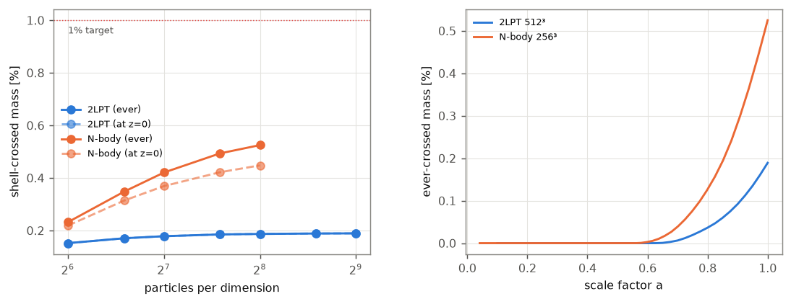
Resolution study
Metric: the largest relative shift of the 1, 10, 50, 90 and 99% density quantiles against the reference run. 2LPT converges to ≤ 0.01% (reference 512³) and N-body to ≲ 0.5% (reference 256³ particles, 512³ PM mesh), even at Rs = ½Rf. Both are invisible next to the 2LPT–N-body differences.
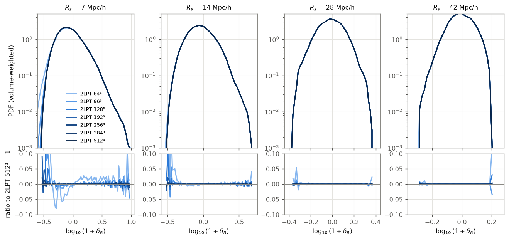
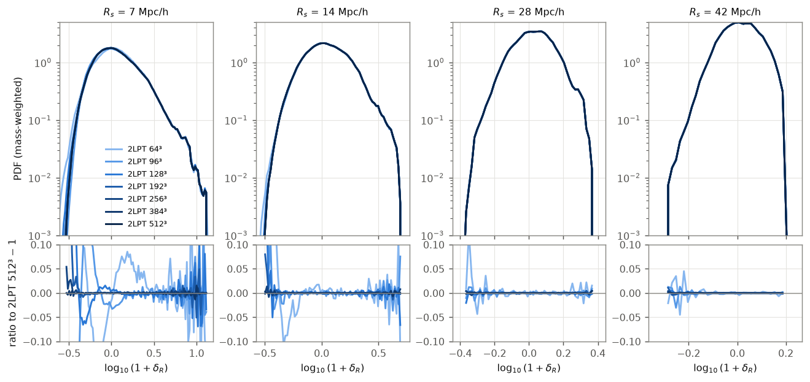
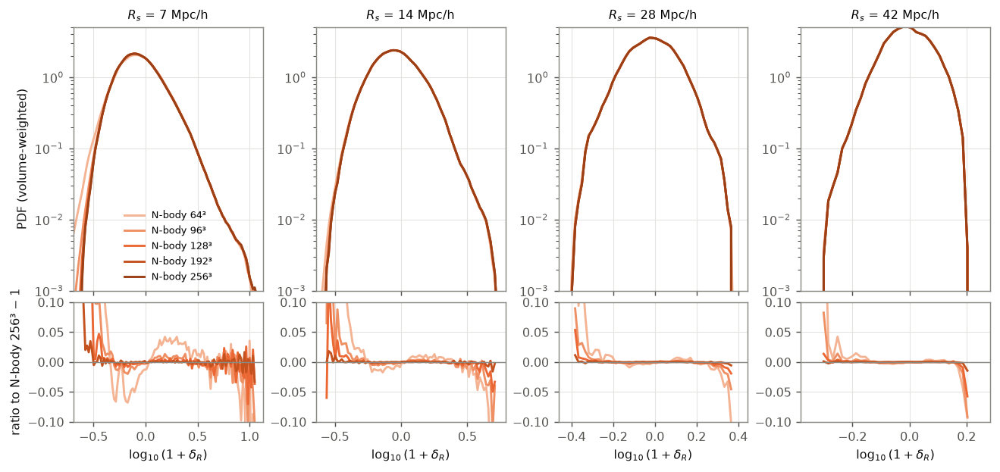
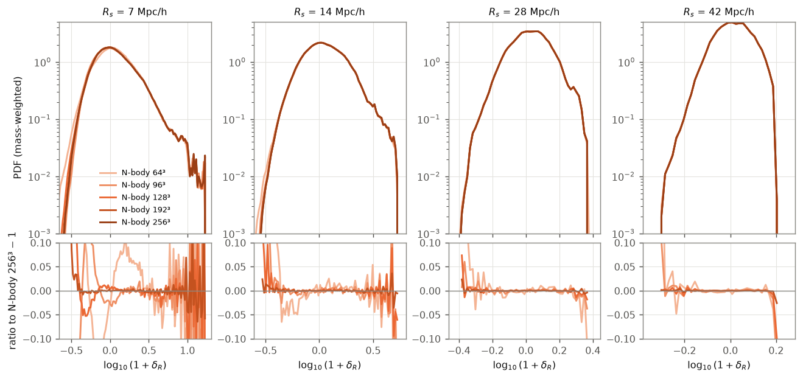
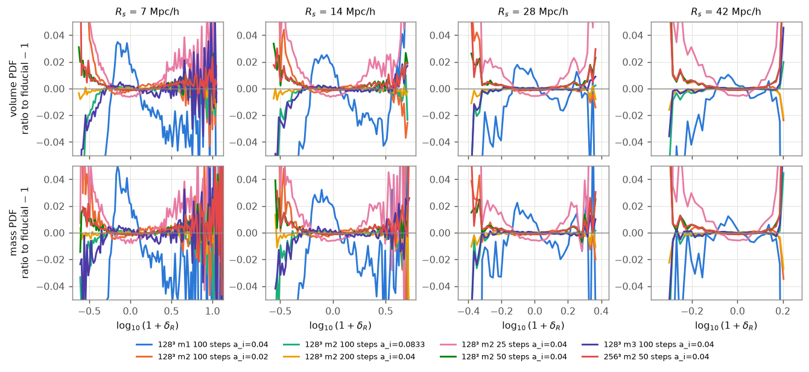
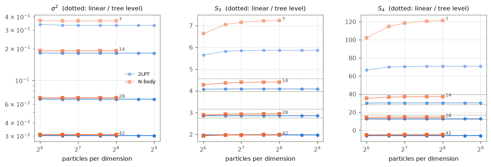
2LPT vs N-body
The bulk agrees; the tails do not. The median matches to ≤ 0.1% and the 10–90% range to ≲ 1%, but the differences grow into the tails and toward small smoothing scales.
| Rs [Mpc/h] | σ²2LPT/σ²NB | S₃ 2LPT / NB | vol. 0.1% / 99.9% | mass 99% / 99.9% | central 10–90% |
|---|---|---|---|---|---|
| 7 (½Rf) | 0.906 | 5.86 / 7.23 | +10.8% / −10.8% | −17.4% / −28.9% | ≤ 1.3% |
| 14 (Rf) | 0.950 | 4.09 / 4.40 | +8.3% / −6.9% | −7.5% / −9.1% | ≤ 0.8% |
| 28 (2Rf) | 0.972 | 2.86 / 2.94 | +2.8% / −1.7% | −1.9% / −2.3% | ≤ 0.4% |
| 42 (3Rf) | 0.981 | 1.98 / 1.98 | +1.3% / −0.5% | −0.5% / −0.5% | ≤ 0.2% |
Quantile columns: 2LPT/N-body − 1 of 1+δR at that quantile. A positive low quantile means 2LPT voids are not empty enough; a negative high quantile means 2LPT peaks are not dense enough.
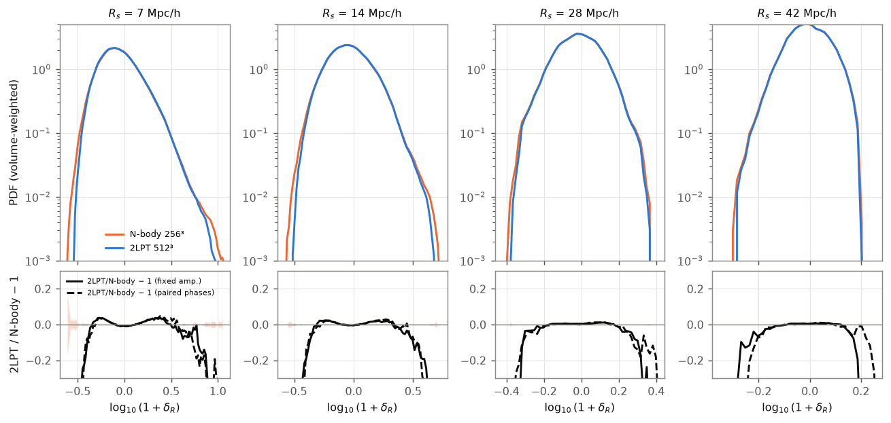
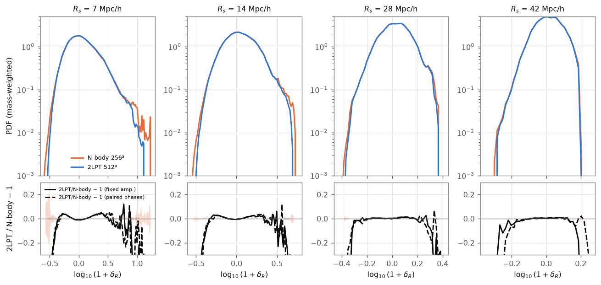
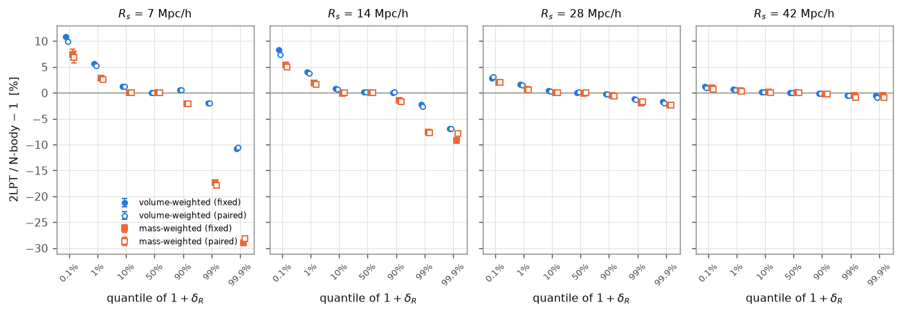
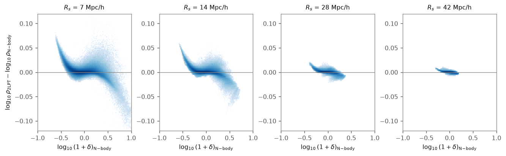
Zel'dovich to 4LPT
The same linear field was evolved to z = 0 with 1LPT–4LPT. Every order is converged in resolution (≤ 0.08% volume / 0.48% mass quantile shift at Rs = 7 between 192³ and 256³), and replacing the exact ΛCDM growth by D₁ⁿ shifts quantiles by ≤ 0.2–0.4%, 5–30× less than the 3LPT → 4LPT change.
| Rs | quantity | Zel'dovich | 2LPT | 3LPT | 4LPT |
|---|---|---|---|---|---|
| 7 | σ²/σ²NB − 1 | −18.3% | −9.4% | −4.0% | −2.6% |
| 7 | vol. 0.1% / 99.9% | −19.7 / −26.4% | +10.8 / −10.8% | −6.3 / −5.1% | +4.3 / −2.8% |
| 7 | mass 99% / 99.9% | −36.6 / −50.0% | −17.4 / −28.9% | −9.1 / −18.6% | −5.4 / −13.7% |
| 14 | σ²/σ²NB − 1 | −9.1% | −5.0% | −1.4% | −0.9% |
| 14 | vol. 0.1% / 99.9% | −17.5 / −17.3% | +8.4 / −6.9% | −4.5 / −3.4% | +2.9 / −2.0% |
| 14 | mass 99% / 99.9% | −19.2 / −23.0% | −7.5 / −9.1% | −3.5 / −4.2% | −1.9 / −2.4% |
| 28 | σ²/σ²NB − 1 | −3.6% | −2.8% | −0.4% | −0.4% |
| 28 | max |quantile shift| | 9.3% | 2.8% | 1.1% | 0.5% |
| 42 | σ²/σ²NB − 1 | −1.5% | −1.9% | −0.2% | −0.3% |
| 42 | max |quantile shift| | 5.1% | 1.3% | 0.3% | 0.1% |
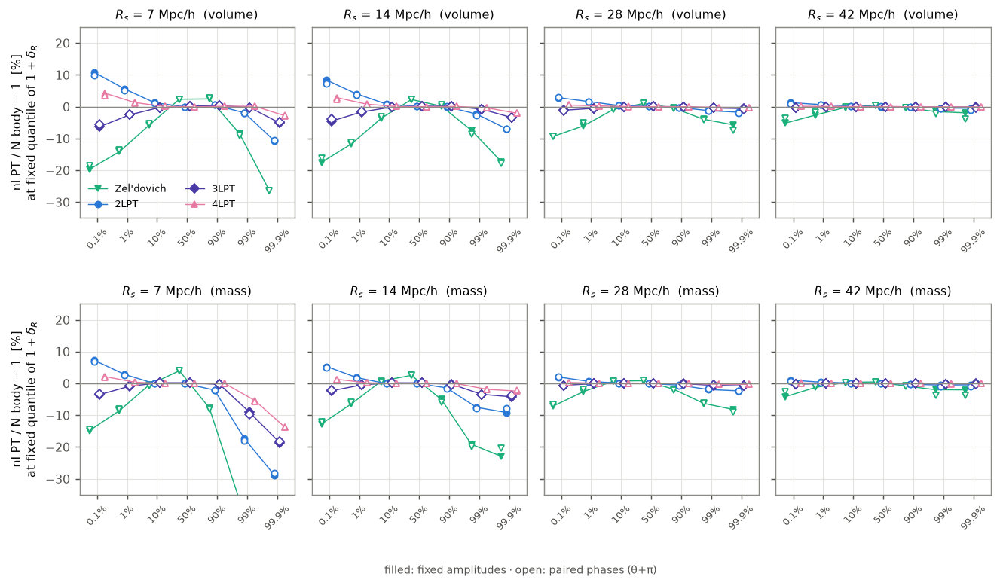
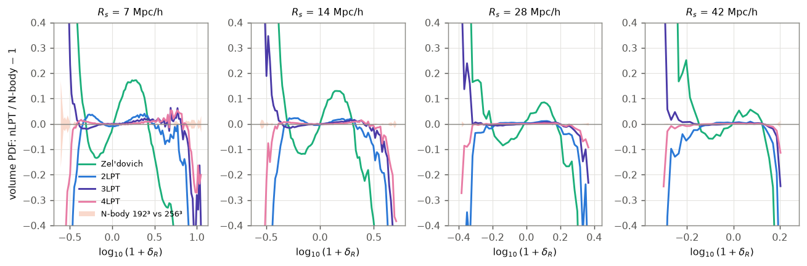
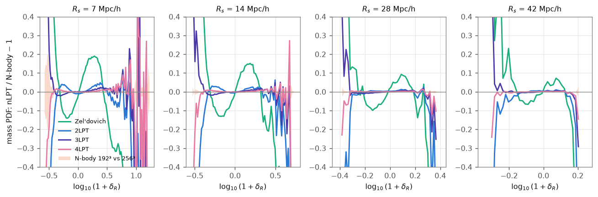
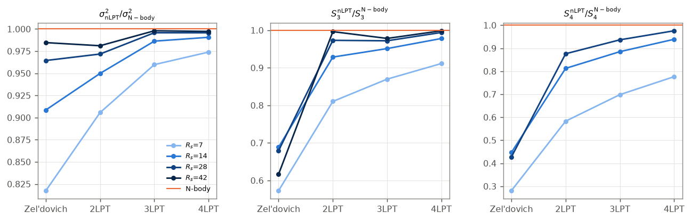
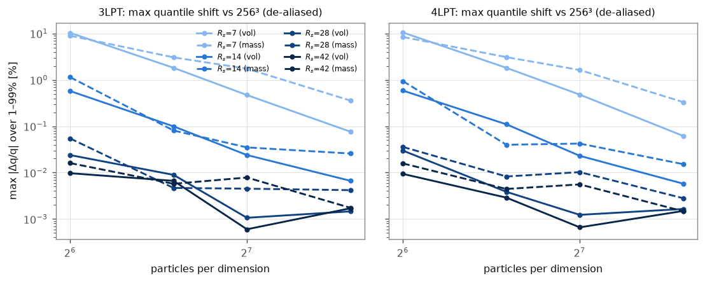
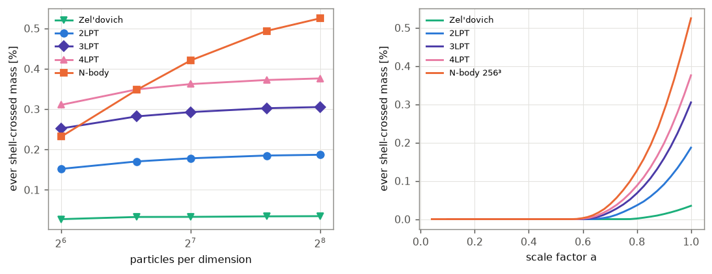
Study 2 · Copula: correlations with the PDF removed
Study 1 found that the one-point PDFs differ. Here the question is whether LPT also gets the spatial correlations wrong once the PDF is taken out, and if so, whether the error lives in the Lagrangian field or in the displacement mapping. Everything is done on the phase-space sheet (6 Kuhn tetrahedra per Lagrangian cube, exact volumes) with DiscoDJNative.
- Mask M: elements not inverted and with centroid stream count exactly 1, in both runs.
- Values: element density Vq/V at R = 0; top-hat smoothed sheet density at the centroid for R = 1.5, 3, 7, 14 Mpc/h (below, near and above the interparticle spacing).
- Gaussianization: y = Φ⁻¹((rank − ½)/N) over M per run, z and R. Mass- (equal elements) and volume-weighted (exact Ve) versions, never mixed.
- Resolution: N = 64, 128, 256 particles per dimension; sheet refinement levels 0 and 1, tracked separately.
Validation (step 1)
| test | criterion | result |
|---|---|---|
| 1a · zinit element by element | Pearson ≥ 0.999, rms Δy ≤ 0.05 | pass 4LPT: 1 − r ≈ 10⁻⁹ |
| 1b · monotone transforms | max |Δξ| ≤ 10⁻¹⁰ | pass Δξ = 0 exactly |
| 1c · noise floors | reported | tie seed 0; refinement 2.5 × 10⁻² (N = 64), 1.0 × 10⁻² (N = 128) |
| 1d · Zel'dovich vs Doroshkevich | det J > 0 | within 3σ at every quantile | failed at 8 seeds pass at 32 |
1a is trivial for 2LPT: the N-body starts from 2LPT at z = 24, so their zinit fields are identical. Test 1d first failed at 3.75σ with 8 band seeds. An independent reimplementation, σ, isotropy and kurtosis checks found no bug, and the criterion itself had a 30–60% false-alarm rate. With 32 seeds and the criterion unchanged, the offset halved as noise would and every quantile passed.
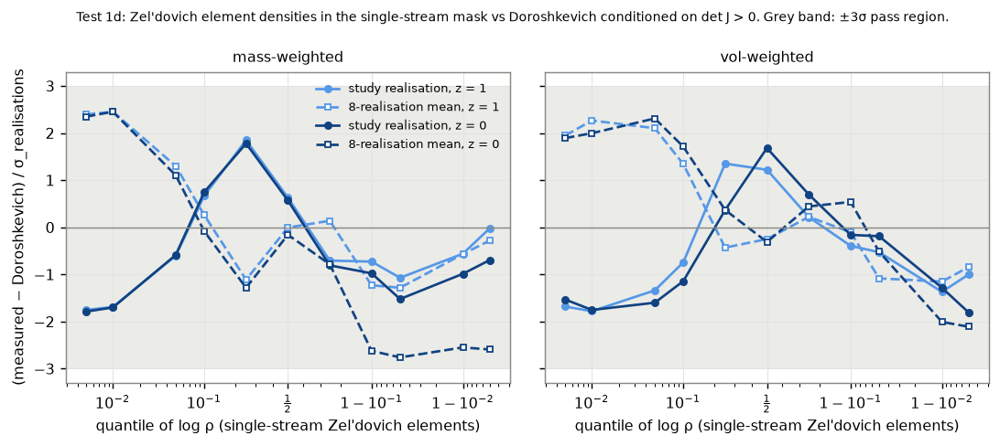
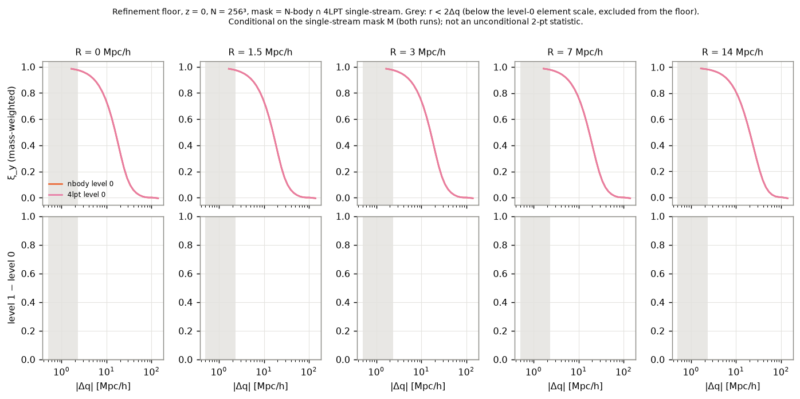
Lagrangian copula (step 2)
The Gaussianized fields are correlated in Lagrangian space, where both runs share the same elements. At 20–30 Mpc/h LPT copulas are slightly too correlated; volume-weighted, they are not correlated enough at small separations, with a sign change near 15 Mpc/h. The pattern barely changes with R, so it is carried by the large-scale field.
| z | weighting | 2LPT: min D (r) | rel. to ξy | 4LPT: min D (r) | rel. to ξy |
|---|---|---|---|---|---|
| 0 | mass | −5.7e-3 (21) | −1.5% | −1.0e-3 (21) | −0.27% |
| 0 | volume | −5.7e-3 (29) | −3.1% | −1.4e-3 (24) | −0.52% |
| 1 | mass | −2.0e-3 (24) | −0.70% | −1.0e-4 (24) | −0.04% |
| 1 | volume | −2.1e-3 (24) | −0.76% | −1.6e-4 (24) | −0.06% |
D = ξy[NB] − ξy[LPT] at R = 7 Mpc/h, N = 256; r in Mpc/h. Converged at |Δq| ≥ 4.3 Mpc/h in all four cases. Conditional on the single-stream mask.
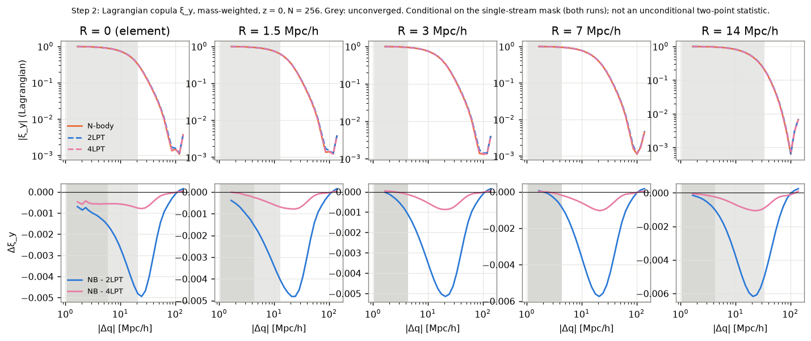
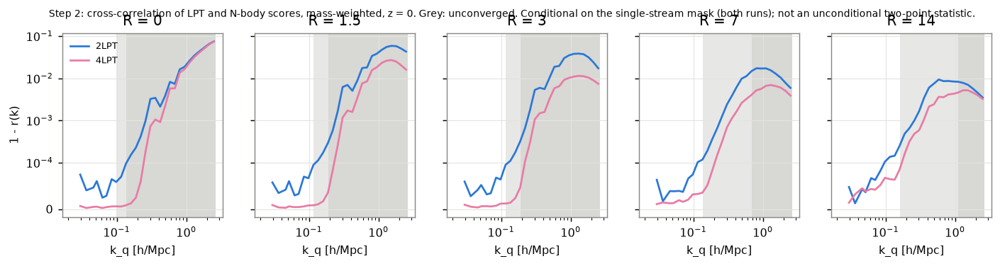
Element-paired ranks (step 3)
Pairing each element's LPT and N-body scores asks whether one is a monotone function of the other. It is, to the precision of the estimator: the non-monotone part η² − R²iso is exactly zero for N ≥ 128. What remains, 1 − Spearman, drops up to 10× from N = 128 to 256 and is equal or larger after sheet refinement. It measures N-body small-scale discreteness near the interparticle scale, not LPT. The one stable LPT rank error is 2LPT at z = 0, R ≥ 7 Mpc/h: 1 − ρ ≈ 1.3 × 10⁻⁴.
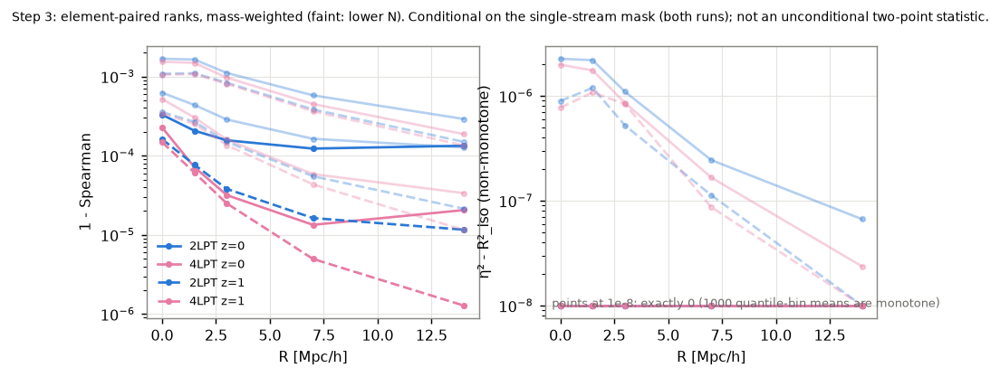
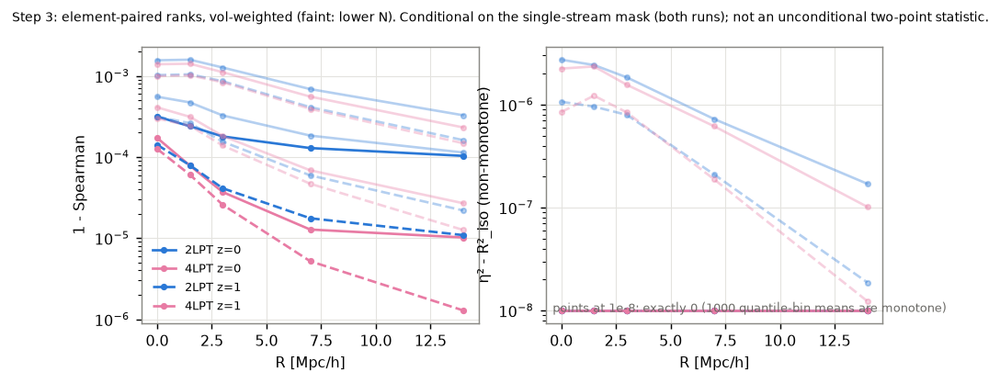
Eulerian copula and attribution (steps 4–5)
In Eulerian space (256³ mesh, nodes single-stream in both runs, 99.96–99.98% of the volume) the correlations use a mask-window correction, ξ = corr(wEy)/corr(wE). The difference is then split in two ways, each in two orderings, and both orderings are always reported because the split is not unique.
- δ space. T = ξδ[NB] − ξδ[LPT] into a marginal part (LPT ranks given the N-body PDF) and a copula part, marginal first (A) or copula first (B).
- Score space. Carry each run's Lagrangian scores through either run's displacement map (label transport Zab). The score-space difference splits into a Lagrangian-copula part, a mapping part, and a residual from Eulerian re-smoothing, in orderings 1 and 2.
| z | pair | R | T | marginal A / B | copula A / B | Dy | Lagr. copula 1 / 2 | mapping 1 / 2 | residual |
|---|---|---|---|---|---|---|---|---|---|
| 0 | 2LPT | 0 | +4.2e-3 | 2.27 / 2.15 | −1.27 / −1.15 | −5.0e-3 | 1.15 / 1.08 | −0.25 / −0.18 | 0.11 |
| 0 | 2LPT | 3 | +7.6e-3 | 1.63 / 1.55 | −0.63 / −0.55 | −4.3e-3 | 1.04 / 1.03 | −0.21 / −0.21 | 0.17 |
| 0 | 2LPT | 7 | +1.1e-2 | 1.21 / 1.19 | −0.21 / −0.19 | −3.3e-3 | 1.04 / 1.04 | −0.16 / −0.16 | 0.12 |
| 0 | 2LPT | 14 | +6.8e-3 | 1.09 / 1.08 | −0.09 / −0.08 | −2.1e-3 | 1.20 / 1.19 | −0.20 / −0.19 | 0.01 |
| 0 | 4LPT | 7 | +2.9e-3 | 1.17 / 1.19 | −0.17 / −0.19 | −6.7e-4 | 1.03 / 1.03 | −0.34 / −0.34 | 0.31 |
| 0 | 4LPT | 14 | +2.0e-3 | 1.08 / 1.08 | −0.08 / −0.08 | −4.3e-4 | 1.15 / 1.15 | −0.24 / −0.23 | 0.09 |
| 1 | 2LPT | 3 | +2.6e-3 | 1.12 / 1.11 | −0.12 / −0.11 | −1.3e-3 | 0.93 / 0.93 | −0.02 / −0.02 | 0.09 |
| 1 | 2LPT | 7 | +2.3e-3 | 1.06 / 1.06 | −0.06 / −0.06 | −9.9e-4 | 0.98 / 0.98 | −0.02 / −0.02 | 0.04 |
Shares of T (δ space) and Dy (score space) at r ≈ 10 Mpc/h, volume-weighted, converged, N = 256. At R = 0 the marginal overshoots and the copula compensates: read it as strong cancellation, not a clean split. Conditional on the single-stream mask.
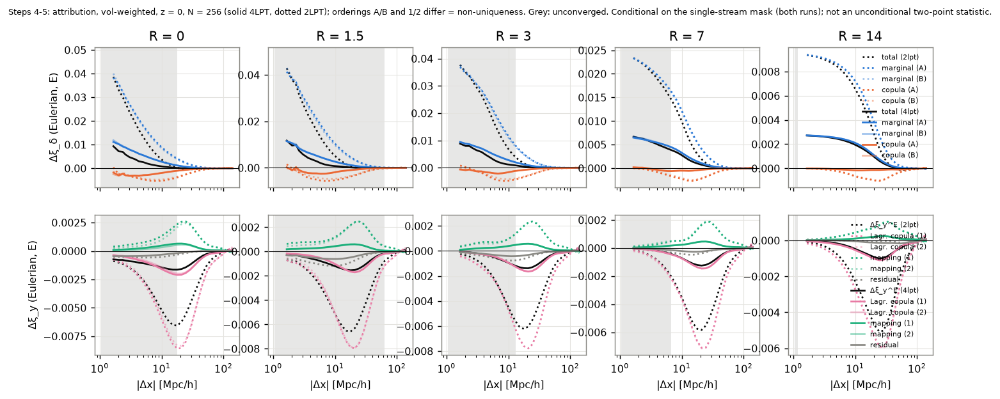
Deviations from the protocol
- Test 1d band enlarged from 8 to 32 seeds, criterion unchanged.
- No N = 256 at refinement level 1: 1.3 × 10⁸ elements need about 20 GB and more than 15 GB RAM. Refinement convergence is measured at N = 128 and assumed to hold at N = 256.
- Eulerian analysis mesh 256³ instead of 512³ after an out-of-memory failure, so Eulerian R = 1.5 Mpc/h is mesh-limited.
- Convergence criterion revised after seeing data. The pre-set tolerances were larger than the LPT–N-body differences, so they could not detect anything. Convergence now tests the differences themselves (25% of their local amplitude plus a measured large-scale noise floor), changed after the level-0 z = 0 runs and before any refinement result. The pre-set results are still reported in the tables.
DiscoDJNative: the Julia engine
Study 2 prompted a faithful port of DISCO-DJ's JAX run_nbody into DiscoDJNative, written with KernelAbstractions.jl so the same kernels target CPU, CUDA and Metal, and differentiable through ChainRulesCore/Zygote.
| component | what it covers | vs JAX DISCO-DJ |
|---|---|---|
| Time tables | growth D₁–D₃, superconformal time, BullFrog coefficients | 4 × 10⁻¹⁵ |
| LPT ICs | nLPT with 3/2-rule de-aliasing | 5 × 10⁻¹⁶ |
| PM forces | CIC/TSC/PCS, gradient and Laplace kernels, interlacing, sheet resampling | 1.2 × 10⁻¹⁴ |
| Full runs | BullFrog, FastPM, symplectic; 12 configurations | 3 × 10⁻¹⁴ |
- Faster nLPT: fused KernelAbstractions source kernels with hand-written adjoints. 4LPT at 64³ went from 8.6 s to 1.6 s; gradients agree with the lean path to 4 × 10⁻¹⁶ and with finite differences to 10⁻¹⁰.
- Faster PM step: a reusable solver with a combined force multiplier, planned FFTs, a real-space finite-difference stencil and fused gathers. One step at 128³ went from 3.6 s to 0.82 s (Float64) or 0.65 s (Float32).
- Phase-space sheet: periodic tetrahedral elements, stream counting by point location, sheet density on a mesh, and element location for Eulerian nodes.
- Upstream bug: DISCO-DJ's linear sheet resampling uses a wrong index offset; the port uses the corrected version, and the parity reference was produced with a patched JAX build.
Limitations
- One box (300 Mpc/h ≈ 21 Rf) and one filter scale. At 42 Mpc/h the box holds only about 90 independent spheres, so PDF shapes there are realisation-specific; the ratios between methods are not.
- Study 1 has a paired-phase check; Study 2 uses one fixed-amplitude realisation.
- The N-body is PM only (force resolution Rf/24 at the top resolution). The shell-crossed fraction is its most resolution-sensitive output and is still creeping up.
- The 4th-order term uses EdS time dependence; the measured EdS-vs-exact shifts at 2nd and 3rd order (≤ 0.2%) bound the error.
- Study 2 is conditional on the single-stream mask, which excludes exactly the 0.8% of elements where LPT and N-body differ most, and its element-level rank statistics bound the LPT error rather than measure it (except 2LPT, z = 0, R ≥ 7).
Reproduce
cd studies/lpt_pdf python3 test_nlpt.py # nLPT validation (spherical collapse, Cauchy invariants) ./queue.sh # Study 1: 2LPT + N-body, ~5 h on 4 cores ./queue_nlpt.sh # Study 1: Zel'dovich..4LPT, ~1 h LPTPDF_RESULTS=results LPTPDF_FIGURES=figures python3 analyze.py cd copula ./make_snapshots.sh # Study 2: DiscoDJNative LPT + run_nbody snapshots ./run_all.sh # step 1, gate on its pass/fail tests, then steps 2-5 (resumable)
Details: studies/lpt_pdf/README.md, copula/README.md and copula/report.md. Configurations and seeds are logged in every result file.